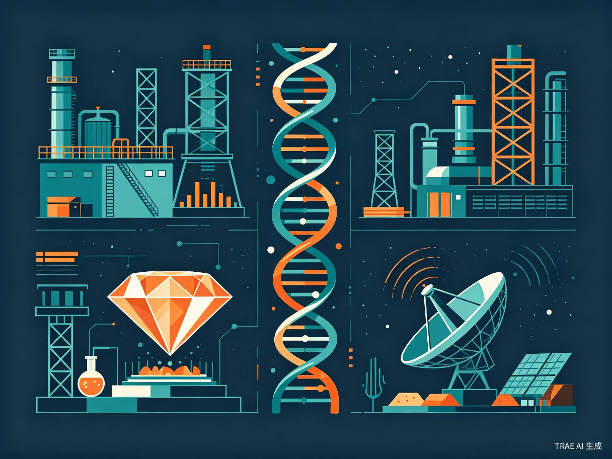

第七章：新世界篇 — 真相追寻

在宝岛获得了石化装置Medusa的线索后，千空团队前往美洲大陆，追寻石化的真相。这一篇章的科技水平进入现代。
石油化工与铺路工程Petrochemical Industry & Road Construction
剧中描述
千空在美洲建立了石油化工产业，从原油中提炼各种化工产品。同时修建了现代化的公路系统，使用石油沥青作为路面材料。
科学原理
石油化工以石油为原料，通过裂解、重整等化学反应生产乙烯、丙烯、合成橡胶、合成纤维等。沥青是石油分馏的重组分，具有良好的粘结性和防水性。
现实对照
现代石油化工产业兴起于20世纪初。沥青路面最早由苏格兰工程师麦亚当（McAdam）在19世纪初推广。[36]
准确性评估
石油化工和铺路工程的基本原理正确，但建立完整的化工产业体系需要庞大的基础设施。
原理正确，规模被低估冷冻舱与复活技术Cryogenic Freezing & Revival
剧中描述
千空开发了冷冻保存技术，利用石化装置的特性实现类似冷冻的效果。通过精确控制石化/复活过程，可以在特定条件下"暂停"和"恢复"人体的生命活动。
科学原理
现实中的冷冻保存基于低温生物学（cryobiology）。在极低温度下（-196°C液氮），细胞代谢几乎停止。关键挑战是防止冰晶形成对细胞的损伤。
现实对照
现实中的人体冷冻技术（cryonics）仍处于实验阶段，尚无成功复活冷冻人体的案例。[37]
准确性评估
作品中的冷冻复活技术基于石化设定，属于科幻范畴。
科幻设定信号追踪与定位Signal Tracking & Positioning
剧中描述
千空追踪Why-Man发出的神秘信号源，利用多普勒效应和三角定位技术确定信号发射源的位置。
科学原理
信号追踪利用电磁波传播特性。通过多个接收站测量信号的到达时间差（TDOA）或到达角度（AOA），可以确定发射源的位置。
现实对照
信号追踪和定位技术在现代有广泛应用，包括雷达追踪、GPS定位、手机基站定位等。[38]
准确性评估
信号追踪的原理正确，是作品科技中较为写实的部分。
高度准确Medusa机制科学解析Scientific Analysis of Medusa Mechanism
剧中描述
千空对石化装置Medusa进行了深入的科学研究，揭示了石化的完整机制。Medusa发射特定频率的电磁波，激活人体内存在的石化微生物，这些微生物将有机组织矿化。
科学原理
作品将石化机制设定为一种未知微生物介导的生物矿化过程。这种微生物被特定电磁波激活后，以极快的速度将有机组织中的碳转化为无机矿物质，同时保留细胞结构的完整性。
现实对照
虽然现实中不存在"石化微生物"，但自然界中确实存在生物矿化（biomineralization）现象。某些细菌可以诱导碳酸钙沉淀；贝壳、珊瑚和骨骼的形成也是生物矿化的结果。[39]
准确性评估
作者巧妙地将虚构的石化机制与现实的生物矿化现象联系起来，但整体上仍是科幻设定。
科幻设定，有一定科学包装人造钻石Synthetic Diamond
剧中描述
千空利用高温高压法（HPHT）合成了人造钻石。钻石作为世界上最硬的天然材料，在工业加工和精密制造中有重要用途。
科学原理
人造钻石的合成基于热力学相图。在极端高温（>1300°C）和高压（>5 GPa）条件下，碳的稳定相为金刚石。通过金属催化剂（如铁、镍）降低反应条件。
现实对照
第一批人造钻石由通用电气公司（General Electric）的研究团队于1954年成功合成，项目负责人为特雷西·霍尔（Tracy Hall）。[40]
准确性评估
人造钻石的合成原理正确，但HPHT方法需要极端的高温高压设备，千空在原始条件下实现这一技术的难度极高。
原理正确，设备要求极高DNA分析技术DNA Analysis Technology
剧中描述
千空开发了DNA分析技术用于身份识别和亲缘关系鉴定。通过提取生物样本中的DNA，进行扩增和比对，可以确定个体身份和遗传关系。
科学原理
DNA分析的核心是聚合酶链式反应（PCR），通过温度循环将微量DNA片段指数级扩增。
现实对照
DNA分析技术由英国遗传学家亚历克·杰弗里斯（Alec Jeffreys）于1984年发明。PCR技术由卡里·穆利斯（Kary Mullis）于1983年发明，穆利斯因此获得1993年诺贝尔化学奖。[41]
准确性评估
DNA分析的原理正确，但PCR需要耐热DNA聚合酶、精确的温度控制设备和特定引物，在原始条件下几乎不可能实现。
原理正确，实验条件要求极高超合金材料Superalloy (Inconel)
剧中描述
千空冶炼了超合金材料（类似Inconel），用于制造火箭引擎等需要承受极端条件的部件。
科学原理
超合金以镍、钴或铁为基体，添加铬、铝、钛、钼等元素。通过沉淀强化和固溶强化机制，在高温（>800°C）下仍能保持高强度。
现实对照
Inconel系列超合金由国际镍公司（International Nickel Company）于1940年代开发。[42]
准确性评估
超合金的冶炼需要真空感应熔炼等精密冶金技术，千空在原始条件下获得这些材料和技术几乎不可能。
原理正确，冶炼条件要求极高